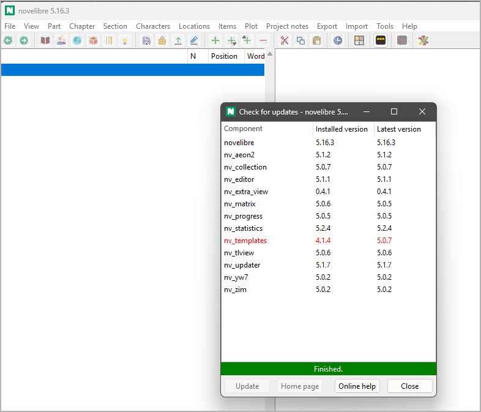

nv_updater
User guide
This page refers to the latest nv_updater release. You can open it with Help > Update checker Online help.
The plugin adds a Check for updates entry to the novelibre Tools menu, and an Update checker Online help entry to the Help menu.
Start the update checker
Open the update checker from the main menu: Tools > Check for updates.
A list pops up, showing installed software components and their version information. Outdated list entries are colored red.
Hint
If no connection to the repository can be established, the current version is indicated as “unknown”.